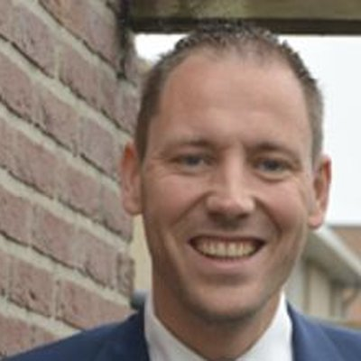
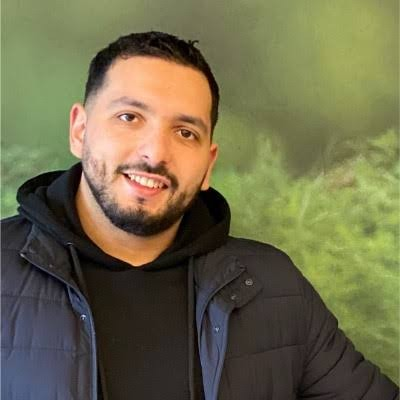

Trainers, docenten en dagvoorzitters
Met deze trainers en docenten werkt Bureau DFO samen: de trainers van DFO Opleidingen en DFO Compliance en de docenten van de NVHP-masterclasses. Ook voor je eigen bijeenkomst of congres boek je ze via Bureau DFO.
Dagvoorzitter inhuren
Een ervaren dagvoorzitter die de financiële sector kent, houdt je congres, seminar of netwerkbijeenkomst strak en levendig. Deze dagvoorzitters kun je via Bureau DFO inhuren.
Met wie wij samenwerken
Jos Besselink
Oprichter WijZijnLoek, specialist AOV-advies
Bekijk profielJan Buis
Expert zakelijke financiering
Bekijk profielMarian Eizinga-Hanemaaijer
Financieel planner (CFP) en trainer Financiële Psychologie
Bekijk profielMartine Glebbeek
RegisterExecuteur bij De Erfenisdeskundige
Bekijk profielReinier Gunneman
Financieel adviseur, hypothecair planner en AI-trainer
Bekijk profielRonald van Hamersveld
Financial controller bij Bureau DFO
Bekijk profielDominique van der Heide Wijma
Dagvoorzitter, presentatrice en interviewer
Bekijk profielAnita Hol-Bubeck
Docent schadeverzekeringen
Bekijk profielJasper Horsthuis
Oprichter en directeur De Scheidingsdeskundige
Bekijk profielHarry van Houdt
Financieel planner; eigenaar Nederlandse Planners Associatie
Bekijk profielJan Kilkens
Talentontwikkelaar bij Steyn & Allberg
Bekijk profielChristine Klaren
Trainer verzekeringen
Bekijk profielJasper Korrel
Zakelijk Inkomen
Bekijk profielRené Kuiper
Adviseur, coach en trainer
Bekijk profielMonique Londema
Financieel planner (CFP) en docent
Bekijk profielRobert-Jan van Loon
Senior consultant DFO Compliance
Bekijk profielMichael Mackaaij
Voorzitter CGA en directeur nexxbiz
Bekijk profielJurjen Oosterbaan Martinius
Algemeen directeur Bureau DFO
Bekijk profielFrank Paalman
Docent bij Impact en hypothecair planner
Bekijk profielEric Bastiaan Pothoven
Financieel adviseur en fiscaal trainer
Bekijk profiel
Joost Schipaanboord
Trainer zakelijke schadeverzekeringen
Bekijk profielJulian Schouwenaars
Trainer beleggen en lijfrenteadvies
Bekijk profielPaul Schuiling
Consultant bij Projective Group
Bekijk profielJurjen Snater
Trainer, coach en financieel adviseur (JPS-Alkmaar)
Bekijk profiel
Sanel Sunje
Consultant bij Projective Group
Bekijk profielRob Timmermans
Directeur Impact Groep
Bekijk profielErik van Toledo
Trainer lijfrenten
Bekijk profielLinda Vervloet
Trainer branding en marketing
Bekijk profielJacqueline van der Vorm
Docent bij De Scheidingsdeskundige
Bekijk profielBernardo Walta
Commercieel directeur De Goudse Verzekeringen
Bekijk profielWil je ook aansluiten als trainer, docent of dagvoorzitter?
Bureau DFO werkt sinds 1992 voor en met financieel dienstverleners. We zoeken vakmensen die hun kennis en ervaring willen delen: in een training, een NVHP-masterclass, een webinar of als dagvoorzitter van een congres of bijeenkomst. Stuur een mail naar info@dfobv.nl.
Waarom samenwerken met Bureau DFO interessant is
Een vaste plek in de branche
- Bureau DFO is al sinds 1992 actief in de financiële dienstverlening en kent de adviespraktijk van binnenuit.
- Een breed opleidingsaanbod (74 opleidingen) in hypotheken, schade, inkomen, pensioen, compliance en bedrijfsvoering.
- Bureau DFO voert het secretariaat van de NVHP; veel NVHP-masterclasses vinden plaats in Hoevelaken.
Alles geregeld rond je training
- Een eigen opleidingslocatie in Hoevelaken: het DFO Vergadercentrum, centraal in het land.
- Inschrijving en deelnemersadministratie via het DFO-opleidingsportaal.
- DFO Studio voor webinars, e-learning en video, zodat je kennis ook online een publiek vindt.
Zichtbaarheid bij je doelgroep
- Een eigen profielpagina op deze site, gekoppeld aan je opleidingen en data.
- Promotie via de website, de agenda en de wekelijkse nieuwsbrief DFO Signalen.
- Bereik onder onafhankelijk financieel adviseurs, kantoren, serviceproviders en brancheorganisaties.
Wat de samenwerking alle partijen brengt
Voor jou als trainer, docent of dagvoorzitter
- Je richt je op de inhoud en het geven van de training; de organisatie ligt bij Bureau DFO.
- Nieuwe opdrachten: ook incompany-trainingen, lezingen en dagvoorzitterschappen worden via Bureau DFO aangevraagd.
- Contact met collega-trainers en vakspecialisten, en signalen uit de markt voor nieuwe onderwerpen.
Voor adviseurs en kantoren
- Actuele, praktijkgerichte kennis van mensen die het vak zelf uitoefenen.
- Opleidingen en masterclasses die aansluiten op wet- en regelgeving en permanente educatie.
- Eén vertrouwd adres voor opleidingen, modeldocumenten, compliance en kennis.
Voor opdrachtgevers van congressen en bijeenkomsten
- Een dagvoorzitter of spreker die de financiële sector en haar taal kent.
- Bureau DFO denkt mee over programma, sprekers en organisatie, met ervaring in congresorganisatie.
- Eén aanspreekpunt voor de inhoud, de locatie en de techniek.
Voor Bureau DFO en de NVHP
- Een breed en actueel aanbod met specialisten uit de praktijk.
- Kennis die in opleidingen, webinars, nieuwsbrieven en documenten terugkomt.
- Een netwerk dat de kwaliteit van het financieel advies in Nederland versterkt.
Aansluiten? Stuur ons een mail
Vertel kort wie je bent, in welk vakgebied je traint of presenteert en welke ervaring je hebt. Stuur gerust een foto en een korte biografie mee. We nemen contact met je op voor een kennismaking.
Liever direct een opleiding volgen?
Bekijk het actuele aanbod van Bureau DFO en de NVHP-masterclasses in Hoevelaken.
Passende opleidingen, masterclasses en documenten
Opleidingen van Bureau DFO
Praktijkgerichte trainingen, webinars en leergangen.
Meerdaagse training4-daagse opleiding Schade Zakelijk
Eerstvolgende: 11 mrt 2027 · Hoevelaken
Workshop AFM Leidraad hypotheekadvisering: stap voor stap uitgelegd
Data en locaties: zie het opleidingsportaal
Cyberrisico
Eerstvolgende: 2 feb 2027 · Hoevelaken
NVHP-masterclasses in Hoevelaken
Bij Bureau DFO; ook toegankelijk voor adviseurs die geen NVHP-lid zijn.
NVHP-masterclassAI Gespreksverslagen
Eerstvolgende: 16 dec 2026 · Hoevelaken
Schrijf een adviesrapport dat klanten wél lezen. Van analyse naar een overtuigend advies. ( voorheen Klantadviesrapport Schrijven)
Eerstvolgende: 27 nov 2026 · Hoevelaken · nog 2 plaatsen
Hypotheken en Vermogen: alles over Box 3
Eerstvolgende: 22 dec 2026 · Hoevelaken
Documenten & modellen
Direct toepasbaar in je praktijk, te bestellen in de webshop.
Naslagwerk